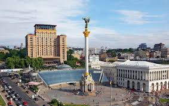
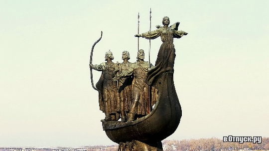

Причиной остановки движения поездов на участке киевского метро "Левобережная" - "Арсенальная" стала поломка поезда. Об этом сообщили в столичном метрополитене. "Внимание! Красная ветка. Едем "Лесная" -"Дарница", "Академгородок" - "Крещатик". Участок "Левобережная" - "Арсенальная" - остановка из-за неисправности поезда", - говорится в сообщении. Примерно через 30 минут движение было восстановлено. В метро не уточнили характер поломки. На платформах скопилось большое количество пассажиров, которые терпеливо ожидали подачи поезда.
Киев – столица Украины, расположенная на реке Днепр. Город известен памятниками религиозной архитектуры и историческими музеями. Также в Киеве есть множество памятников и монументов, которые обязательно стоит посетить.
Майдан Незалежности - одно из самых известных мест Киева. Район, в пределах которого ныне расположился Майдан Незалежности, ещё до Х века упоминался в документах как Перевесище. Своё древнее название местность получила благодаря тому, что здесь жители Киева расставляли (перевешивали) сети, с помощью которых они ловили здесь диких животных. Чуть позднее тут расположились Лядские ворота, через которые можно было попасть в верхний город (именно через них в город в своё время ворвалась орда Батыя). На протяжении долгого времени на месте Майдана находился пустырь с остатками оборонительных сооружений. Только с переходом роли главной улицы к Крещатику, который проходит как раз через Майдан, здесь закипела активная деятельность. Так, уже в начале 30-х годов ХІХ века тут были снесены остатки оборонительных сооружений и площадь стала называться Крещатицкой. Во второй половине того же века на площади появилась городская дума и площадь была переименована в Думскую. Во время гражданской войны площадь получила своё очередное название – Советская, но и оно продержалось не так уж долго, в 1935 году трансформировавшись в площадь Калинина. После восстановительных работ на Крещатике, площадь стала намного шире и превратилась в главную площадь города. Приблизительно в то же время площадь начинает принимать свой современный вид, но и после этого Майдан регулярно продолжают реконструировать и перестраивать. В 1977 площадь обрела новое имя – Площадь Октябрьской Революции, но и оно в сравнительно скором времени было изменено на нынешнее – Майдан Независимости (тогда же была переименована станция метро, непосредственно выходившая на площадь). Последняя на сегодняшний день грандиозная реконструкция проводилась в 2000-2001 годах и была приурочена к 10-летию независимости Украины.
Памятник основателям Киева также входит в число наиболее узнаваемых киевских монументов. Его открыли в 1982 году, в самый разгар празднования 1500-летия Киева. Композиция памятника довольно необычная – он выполнен в форме ладьи, в которой плывут братья Кий, Щек, Хорив, а также их сестра Лыбидь. Монумент возведён из кованной меди, постамент был выполнен из гранита. Возле подножья памятника располагается небольшой бассейн. Сам памятник настолько полюбился киевлянам, что именно с ним связана оригинальная традиция: приезжающие к памятнику молодожёны становятся к нему спиной и бросают свадебный букет через себя – попадание в ладью, по поверью, сулит крепкую семейную жизнь.
Каштан - красивое дерево, особенно в пору цветения, когда его крупные метельчатые соцветия придают дереву нарядный, праздничный вид, род растений из семейства блюдценосных. Около 30 видов деревьев или кустарников, свойственны умеренному и тропическим поясам. Важнейшим видом считается обыкновенный каштан (C. vulgaris), в южн. Европе, в Крыму, Закавказе, Африке, южн. Азии и Америке. Издавна разводится ради плодов, достигает иногда глубокого возраста, до 1000 лет. Древесина очень прочна, идет на бочарные и столярные изделия. Мучнистые и сладковатые плоды каштана - предмет торговли в южных странах.
Перед Рождеством на улицах многих европейских городов можно увидеть как пекут каштаны. Эта старинная традиция началась много лет назад, когда для запекания каштанов делали специальные сковородки. Чтобы запечь каштаны дома, нужно прежде всего очистить их от внешней оболочки и горьких мембран, затем натереть щеткой, чтобы стереть всю грязь, надеть их на шампуры или просто сделать небольшие надрезы в кожуре и положить на открытый огонь (если не сделать надрез, они могут взорваться).